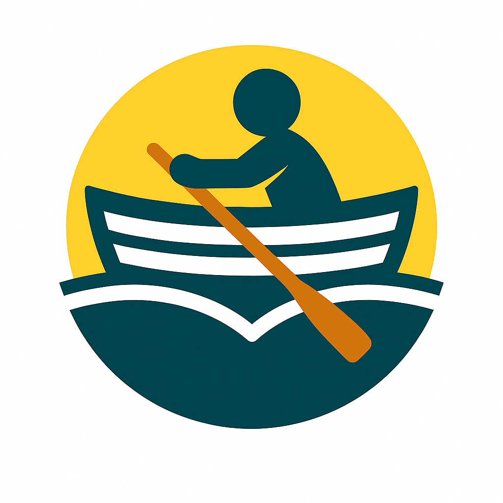

Kontakt och länkarContact & Links
Stockholms universitet Stockholm University
För frågor som rör mitt arbete vid Stockholms universitet, kontakta mig via mejl.
For questions related to my work at Stockholm University, please contact me by email.

Tjänster via Rowboater AB Services through Rowboater AB
Jag erbjuder tjänster via mitt företag Rowboater AB. Kontakta mig via mejl eller LinkedIn.
I provide services through my company Rowboater AB. Contact me by email or on LinkedIn.
Exempel på tidigare uppdrag Selected areas of previous work
- Ämnesexpertis och rådgivning
- Workshoppar, seminarier och föreläsningar
- Utveckling av onlinekurser och utbildningsmaterial
- Rapporter, analyser och annat skriftligt material
- Forskningsmetodik och studiedesign
- Kvantitativ dataanalys
- Subject-matter expertise and advisory work
- Workshops, seminars, and presentations
- Development of online courses and educational materials
- Reports, analyses, and other written materials
- Research methodology and study design
- Quantitative data analysis